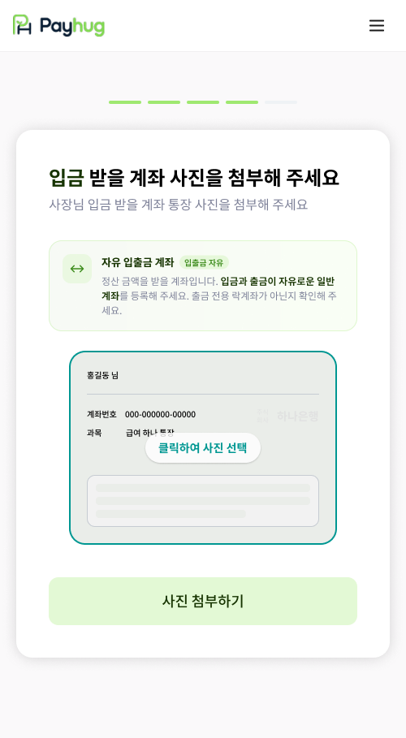
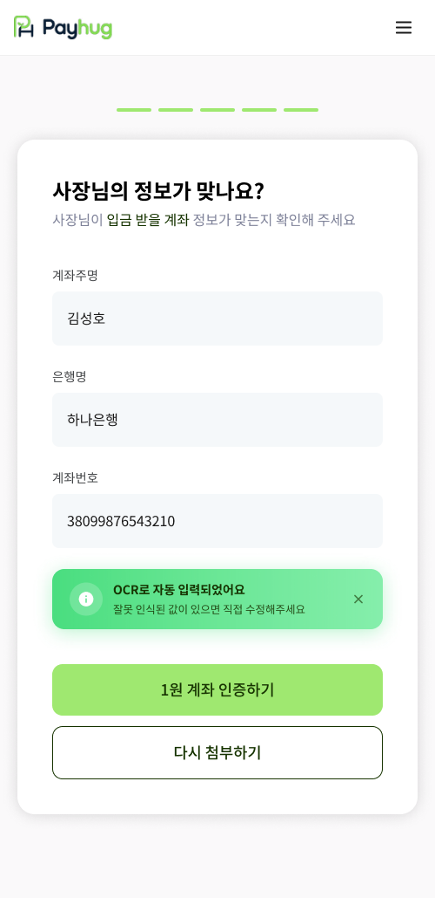

PART 2 · 가입에서 선정산 개시까지
18
입금계좌 등록 —
사장님이 돈을 받을
계좌
앞에서 만든 선정산 전용계좌(락계좌)와는 완전히 다른 계좌입니다
1
통장 사진 첨부

여기 올리는 건 '받을' 계좌입니다
선정산금이 실제로 들어올 계좌예요. 화면 안내 그대로
입금과 출금이 자유로운 일반 계좌
여야 합니다.
›
2
정보 확인 → 1원 인증

사진에서 자동으로 읽어옵니다
계좌주명·은행명·계좌번호가 채워져 나오고, 잘못 읽힌 값은 그 자리에서 고치시면 됩니다.
이 자리에
선정산 전용계좌(락계좌)를 올리시면 안 됩니다.
화면에도 "출금 전용 락계좌가 아닌지 확인해 주세요"라고 적혀 있습니다.
1
계좌 두 개를 헷갈리지 마세요
선정산 전용계좌(락계좌)는 카드사와 배달앱 매출이 모이는 계좌라 사장님이 마음대로 꺼내 쓸 수 없습니다. 지금 등록하는 입금계좌는 사장님이 실제로 돈을 받아 쓰시는 계좌고요. 이 둘을 "정산계좌"라고 뭉뚱그려 말하면 반드시 사고가 납니다.
2
1원을 보내 본인 계좌인지 확인합니다
「1원 계좌 인증하기」를 누르면 그 계좌로 1원이 들어갑니다. 사장님 명의가 맞는지 확인하는 절차라, 이게 끝나야 계좌가 등록됩니다. 다른 사람 명의 계좌로는 진행되지 않습니다.
3
한 번 등록하면 앱에서 못 바꿉니다
협의 예정
등록이 끝난 뒤에 계좌를 바꾸시려면 사장님이 앱에서 직접 수정하실 수 없고, 1:1 문의를 거쳐야 합니다. 필요한 서류와 걸리는 기간은 아직 정해지지 않았으니, 현장에서 "며칠이면 바꿔 드립니다"라고 말씀하지 마세요.
가맹점 앱 · 입금 받을 계좌 등록 화면 원본
pay
hug